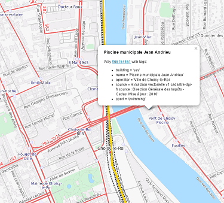

<!DOCTYPE html>
<html>
<head>
	<title>Lignes de vie</title>
	<meta charset="utf-8" />
	
	<meta name="description" content="Test de recherche de POI autour des gares d'Île-de-France"/>
	<link rel="canonical" href="http://pingolin.github.io" />
	<meta property="og:title" content="Lignes de vie" />
	<meta property="og:description" content="Test de recherche de POI autour des gares d'Île-de-France" />
	<meta property="og:url" content="http://pingolin.github.io" />
	<meta property="og:site_name" content="Ligne de vie" />
	<meta property="og:image" content="xxx" />

	<meta name="viewport" content="width=device-width, initial-scale=1.0, maximum-scale=1.0, user-scalable=no" />
    <link rel="stylesheet" href="css/leaflet.css" />
    <script src="js/leaflet.js"></script>
	<script src="http://code.jquery.com/jquery-2.1.4.js"></script>
	<script src="https://code.jquery.com/ui/1.11.4/jquery-ui.js"></script>
	<link rel="stylesheet" href="//code.jquery.com/ui/1.11.4/themes/smoothness/jquery-ui.css">
<!-- Librairies externes -->
<!-- <script src="js/SliderControl.js"></script>-->
    <script src='//api.tiles.mapbox.com/mapbox.js/plugins/leaflet-hash/v0.2.1/leaflet-hash.js'></script>
    <link rel="stylesheet" href="css/leaflet.modal.min.css" />
    <script type="text/javascript" src="js/Leaflet.Modal.min.js"></script>
<!-- Jolis Marqueurs -->
	<link rel="stylesheet" href="//maxcdn.bootstrapcdn.com/font-awesome/4.3.0/css/font-awesome.min.css">
	<link rel="stylesheet" href="css/leaflet.awesome-markers.css">
	<script src="js/leaflet.awesome-markers.js"></script>    
<!-- Include the loading control -->
    <link rel="stylesheet" href="css/Control.Loading.css" />
    <script src="js/Control.Loading.js"></script>
	<script src="js/leaflet.geometryutil.js"></script>
<!-- Tous les fichiers JSON -->
    <script type="text/javascript" src="js/geojson/A.geojson"></script>  
<script type="text/javascript" src="js/geojson/B.geojson"></script> 
<script type="text/javascript" src="js/geojson/C.geojson"></script> 
<script type="text/javascript" src="js/geojson/D.geojson"></script>
<script type="text/javascript" src="js/geojson/E.geojson"></script> 
<script type="text/javascript" src="js/geojson/H.geojson"></script> 
<script type="text/javascript" src="js/geojson/J.geojson"></script> 
<script type="text/javascript" src="js/geojson/K.geojson"></script> 
<script type="text/javascript" src="js/geojson/L.geojson"></script> 
<script type="text/javascript" src="js/geojson/N.geojson"></script> 
<script type="text/javascript" src="js/geojson/P.geojson"></script> 
<script type="text/javascript" src="js/geojson/R.geojson"></script> 
<script type="text/javascript" src="js/geojson/U.geojson"></script>
<script type="text/javascript" src="js/geojson/T4.geojson"></script>

<!-- Fin des chargements de scripts -->
    <style>
		body {
			padding: 0;
			margin: 0;
		}
		html, body, #map {
			height: 100%;
		}
    </style>

 <!-- Contenu de la carte -->
 <script>

/**
 * This is a method of the L.Polygon object which returns the position of the 
 * "middle" of the polygon.
 * The returned position might not be inside the polygon.
 * @return latlng coordonates of the position.  
 */
        L.Polygon.prototype.getCenter = function() {
            var pts = this._latlngs;
            var off = pts[0];
            var twicearea = 0;
            var x = 0;
            var y = 0;
            var nPts = pts.length;
            var p1, p2;
            var f;
            for (var i = 0, j = nPts - 1; i < nPts; j = i++) {
                p1 = pts[i];
                p2 = pts[j];
                f = (p1.lat - off.lat) * (p2.lng - off.lng) - (p2.lat - off.lat) * (p1.lng - off.lng);
                twicearea += f;
                x += (p1.lat + p2.lat - 2 * off.lat) * f;
                y += (p1.lng + p2.lng - 2 * off.lng) * f;
            }
            f = twicearea * 3;
            return new L.LatLng(
                x / f + off.lat,
                y / f + off.lng
            );
        }
/**
 * Ajout Slider.

var RadiusSliderControl = L.Control.extend({
	options: {
		position: 'topright'
	},	
	onAdd: function (map) {
		var sliderContainer = L.DomUtil.create('div', 'class-slider leaflet-bar leaflet-control leaflet-control-custom');
		    options = this.options;
			sliderContainer.style.backgroundColor = 'white';
			sliderContainer.style.width = '100%';
			sliderContainer.style.height = '30px';
			$(sliderContainer).append('<div id="slider">Ci gît un slider qui ne veut pas s\'afficher</div>');
			//Prevent map panning/zooming while using the slider
			$(sliderContainer).mousedown(function () {
				map.dragging.disable();
			});
			$(document).mouseup(function () {
				map.dragging.enable();
			});
			this.radiusSlider();
			return sliderContainer;
	},
		radiusSlider: function() {
		$("#slider").slider({
				value:300,
				min: 0,
				max: 800,
				step: 50
				});
	},	
});
 */ 
/**
 * Instance of "i" control which show some informations.
 */ 
        var informationControl = L.Control.extend({
            options: {
                position: 'topright' 
                //control position - allowed: 'topleft', 'topright', 'bottomleft', 'bottomright'
            },
            onAdd: function (map) {
                var container = L.DomUtil.create('div', 'leaflet-bar leaflet-control leaflet-control-custom');
                container.style.backgroundColor = 'white';
                container.style.backgroundImage = "url(images/information.png)";
                container.style.backgroundSize = "30px 30px";
                container.style.width = '30px';
                container.style.height = '30px';
                
                container.onclick = function(e) {

                    console.log('buttonClicked');
                    console.log(e);
                    console.log(map);
                    map.fire('modal', {
                        content: '                                              \
<h1>lignesdevie</h1>                                        \
                                                                                \
                                                           \
                                                                                \
<p>Tests d\'une carto des services et équipements autour des gares d\'Île-de-France.<br>\
L\'idée part d\'un besoin de trouver si des piscines existaient le long d\'un trajet de RER C.<br>\
Le projet se base aussi sur la cartographie OpenStreetMap des gares de Transilien dont <a href="http://wiki.openstreetmap.org/wiki/FR:Railway_stations">le référentiel a été partagé sur le wiki OSM</a>    \
                                                                                \
<p>Piscine, crèches, etc. Cherchez et trouvez des services sur votre trajet     \
habituel. N\'utilise que les objets cartographié dans <a href="http://www.openstreetmap.org">OpenStreetMap</a>.</p> \
                                                                                \
<h2>To Do</h2>\
- Ajouter des contrôles dynamiques : slider pour la distance, choix des lignes, liste d\'équipements et services,...<br>\
- Ajouter le tracé en couleur des autres lignes que C (export geojson)<br>\
- Améliorer l\'appel Overpass (très long actuellement)<br>\
Tout le code est sur Github : <a href="https://github.com/Pingolin/pingolin.github.io">https://github.com/Pingolin/pingolin.github.io</a>\
',
						closeTitle: 'fermer'
                    });
                };
                return container;
            }
        });    
/**
 * Icones et layer.
 */
	L.AwesomeMarkers.Icon.prototype.options.prefix = 'fa'; 
	var layers = [{
			title: "Piscines à 800m d'une gare ligne C",
			request:'"sport"="swimming"',
			ligne:'"C"',
			group: L.featureGroup(), 
			icon: L.AwesomeMarkers.icon({
                icon: 'life-ring',
				markerColor: 'blue'
			})
		},{
			title: "Piscines à 800m d'une gare ligne N",
			request:'"sport"~"swimming"',
			ligne:'"N"',
			group: L.featureGroup(), 
			icon: L.AwesomeMarkers.icon({
                icon: 'life-ring',
				markerColor: 'blue'
			})
		},{
			title: "Tennis à 800m d'une gare ligne C",
			request:'"sport"~"tennis"',
			ligne:'"C"',
			group: L.featureGroup(), 
			icon: L.AwesomeMarkers.icon({
                icon: 'circle',
				markerColor: 'green'
			})
		}, {
			title: "Creche à 800m d'une gare ligne C",
			request:'"amenity"~"kindergarten|childcare"',
			ligne:'"C"',
			group: L.featureGroup(), 
			icon: L.AwesomeMarkers.icon({
                icon: 'child',
				markerColor: 'red'
			})
		}];


/**
 * Open a popup composed using the event & the this instance.
 * @param event The event which has been fired.
 **/  
        function onClick(event) {
            var t ='<H3>' + this.tags.name + '</H3>';
            		if (this.tags.website) {
            			t += '- <a href="'+ this.tags.website + '">Site Internet</a><br/>';
            		};
            		if (this.tags.url) {
            			t += '- <a href="'+ this.tags.url + '">Site Internet</a><br/>';
            		};
            		if (this.tags.wikipedia) {
            			t += '- <a href="http://en.wikipedia.org/wiki/'+ this.tags.wikipedia + '">Page Wikipedia</a><br/><br/>';
            		};
			t += 'Une erreur ? <a href="http://www.openstreetmap.org/edit?' + this.type + 
                    '=' + this.id + '" target="_blank"> Éditer l\'objet sur OpenStreetMap</a><br/><br/>Tags de l\'objet :<ul>';
            for(var key in this.tags) {
                if (this.tags.hasOwnProperty(key)) {
                    t += "<li>" + key + " = '" + this.tags[key] + "'</li>";
                }
            };
            t += "</ul>";
            map.openPopup(t, event.latlng);
        };
/**
 * Ajoute les lignes Transilien.
 */ 		
/**
 * Compute and update the icons' layer.
 */ 
        function askForPlots() {
            
            var zoom = map.getZoom();
            var bounds = map.getBounds();
            var minll = bounds.getSouthWest();
            var maxll = bounds.getNorthEast();
            var bbox = minll.lat + ',' + minll.lng + ',' + maxll.lat + ',' + maxll.lng;

            layers.forEach(function(layer){
                if (!map.hasLayer(layer.group)) return;
                
                map.fireEvent('dataloading'); 

                var url = "http://overpass-api.de/api/interpreter?data=[out:json];";
		var urla = "rel[\"line:SNCF\"~" + layer.ligne +"];";
                if (typeof layer.request == "object") {
                    layer.request.forEach(function(req){
                    url += urla + "node(around:800)[" + req + "][\"access\"!~\"private|no\"];out qt;";
		    url += urla + "way(around:800)[" + req + "][\"access\"!~\"private|no\"];";
                    });
                } else {
                    url += urla + "node(around:800)[" + layer.request + "][\"access\"!~\"private|no\"];out qt;";
		    url += urla + "way(around:800)[" + layer.request + "][\"access\"!~\"private|no\"];";
                }
                url += "out center qt;";
                          
                $.getJSON(url, function(feature){
                    var nodes = [];
                    var ways = [];
                    var markers = [];
                    layer.group.clearLayers();
                    
                    feature.elements.forEach(function( elem ) {
                        switch (elem.type) {
                            case 'node':
                                nodes[elem.id] = L.latLng(elem.lat, elem.lon);
                                if ('tags' in elem) {
                                    layer.group.addLayer(L.marker(L.latLng(elem.lat, elem.lon), {
                                        icon: layer.icon
                                    }).on('click', onClick, elem));
                                }
                                break;
                            case 'way':
								ways[elem.id] = L.latLng(elem.center.lat, elem.center.lon);
                                if ('tags' in elem) {
                                    layer.group.addLayer(L.marker(L.latLng(elem.center.lat, elem.center.lon), {
                                        icon: layer.icon
                                    }).on('click', onClick, elem));
                                }
                                break;
                            default:
                                console.log('type error');
                        }
                    });
                    map.fireEvent('dataload'); 
                });            
            });
        };


/*
/// @see http://taginfo.openstreetmap.org/keys/?key=hazard#values

/*
   		var mapboxLayer = L.tileLayer('//{s}.tiles.mapbox.com/v3/{id}/{z}/{x}/{y}.png', {
			maxZoom: 18,
			attribution: 'Imagery © <a href="http://mapbox.com">Mapbox</a>',
			id: 'examples.map-i875mjb7'
		});
*/


var Thunderforest_Transport = L.tileLayer('http://{s}.tile.thunderforest.com/transport/{z}/{x}/{y}.png', {
	attribution: '&copy; <a href="http://www.opencyclemap.org">OpenCycleMap</a>, &copy; <a href="http://www.openstreetmap.org/copyright">OpenStreetMap</a>',
	maxZoom: 19
});

        var map;
        var hash;
        
        window.addEventListener('DOMContentLoaded', function(e) {
            map = L.map('map', {
                layers: [Thunderforest_Transport, layers[0].group],
                center: [48.8654,2.3370],
                zoom: 12,
                loadingControl: true
            });
            
            map.addControl(new informationControl());
			
			/// Début ajout Slider
			/// map.addControl(new RadiusSliderControl());	
			/// Fin ajout Slider
			
            var overlays = {};
            layers.forEach(function(layer){
                overlays[layer.title] = layer.group;
            });
            map.addControl(L.control.layers({"OSM Transport": Thunderforest_Transport}, overlays, {
                collapsed: false    
            }));
            
			listeligne = [ligneA, ligneB, ligneC, ligneD, ligneE, ligneH, ligneJ, ligneK, ligneL, ligneN, ligneP, ligneR, ligneU, ligneT4];
			
			function AffichLigne(element, index, array) {
				stylelignes = {
				"color": listeligne[index].properties.ligne_couleur,
				"weight": 6,
				"opacity": 0.5,
				};
				L.geoJson(listeligne[index], {
					style: stylelignes,
					clickable: false
			}).addTo(map);};
			
			listeligne.forEach(AffichLigne);
			
            hash = L.hash(map);

            map.on('overlayadd', askForPlots);
    
/*           map.on('locationfound', function(e){
//                console.log('LocationFound', e);
                userLocation = e;
    			var radius = e.accuracy / 2;
    //			L.marker(e.latlng).addTo(map)
    //				.bindPopup("Vous êtes dans un rayon de " + radius + " m.").openPopup();
                if (userLocationLayer != null) {
                    map.removeLayer(userLocationLayer);
                }
    			userLocationLayer = L.circle(e.latlng, radius).addTo(map);
            });
    
            map.locate({
                watch: true,                // follow location
                enableHighAccuracy: true    // using GPS
            });
*/
            askForPlots(); 
        
        });


/*
Passer à photon.komoot.de avec autocomplétion

        new L.Control.OSMGeocoder({    // https://github.com/k4r573n/leaflet-control-osm-geocoder
        position: 'topleft',
        text: 'Centrer',
        email: 'noemail'
        }).addTo(map);
*/


    </script>
</head>
<body>

    <div id="map"></div>


</body>
</html>
